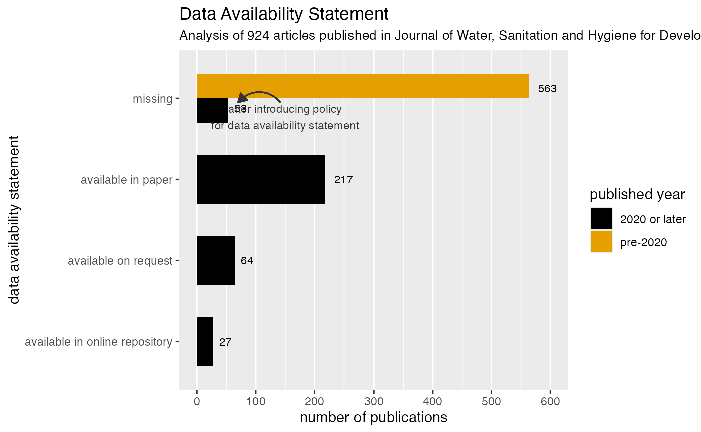

Missed Opportunity: where is WASH research data gone?
Lars Schöbitz & Mian Zhong
Source:vignettes/articles/data-availability-washdev.Rmd
data-availability-washdev.RmdBackground
In the sector of Water, Sanitation and Hygiene (WASH), very little data is shared publicly and follows the best practices for reuse. The first missed opportunity are journal articles and data from researchers which often involves huge efforts in time, labor, and intelligence. One strategy to improve this is to implement a Data Availability Statement together with the published journal article. A data availability statement indicates how the data used in the study is accessed and shared. For the journal of Water, Sanitation and Hygiene for Development, 3 options are offered for the authors to decide which best describes their data:
- All relevant data are included in the paper or its Supplementary Information.
- Data cannot be made publicly available; readers should contact the corresponding author for details.
- All relevant data are available from an online repository
Using the dataset washdev from the
washopenresearch data package, this example investigates
the “Data Availability Statement” from 924 articles published in the
Journal of Water, Sanitation and Hygiene for Development from 2011 to
2023.
# Import useful libraries
## Package installation if you do not have them, uncomment and run the following two lines
## install.packages(c("tidyverse", "devtools", "ggthemes", "gt"))
## devtools::install_github("washopenresearch")
library(washopenresearch)
library(tidyverse)
library(ggthemes)
library(gt)How is WASH research data available in the journal?
In 2020, the journal implemented a policy change to ask for including a data availability statement (DAS) for publications. In this section, the goal is to understand the impact of the DAS policy change and the distribution of different types of DAS.
1. Data Preparation
Let’s start by having an overview of the data where we can find
relevant variables like published_year,
has_das, das_type to be used for analysis.
glimpse(washdev)
#> Rows: 924
#> Columns: 28
#> $ paperid <int> 28742, 28745, 28743, 28744, …
#> $ volume <int> 1, 1, 1, 1, 1, 1, 1, 1, 1, 1…
#> $ issue <int> 1, 1, 1, 1, 1, 1, 1, 2, 2, 2…
#> $ paper_url <chr> "https://iwaponline.com/wash…
#> $ journal <chr> "Journal of Water, Sanitatio…
#> $ title <chr> "Editorial", "The sanitation…
#> $ published_year <dbl> 2011, 2011, 2011, 2011, 2011…
#> $ is_supp <lgl> FALSE, FALSE, FALSE, TRUE, F…
#> $ num_supp <int> 0, 0, 0, 1, 0, 0, 0, 0, 0, 0…
#> $ supp_file_type <list> NA, NA, NA, "pdf", NA, NA, …
#> $ supp_url <list> NA, NA, NA, "https://iwa.si…
#> $ num_authors <int> 6, 5, 6, 2, 2, 2, 3, 2, 3, 8…
#> $ first_author_name <chr> "Jamie Bartram", "E. Kvarnst…
#> $ first_author_affiliation <chr> "Journal of Water, Sanitatio…
#> $ first_author_affiliation_country <chr> NA, "Sweden", "Cameroon", "I…
#> $ first_author_email <chr> NA, "elisabeth.kvarnstrom@se…
#> $ first_author_orcid <chr> NA, NA, NA, NA, NA, NA, NA, …
#> $ correspondence_author_name <chr> NA, "E. Kvarnström", "E. Soh…
#> $ correspondence_author_affiliation <chr> NA, "Stockholm Environment I…
#> $ correspondence_author_affiliation_country <chr> NA, "Sweden", "Cameroon", "I…
#> $ correspondence_author_email <chr> NA, "elisabeth.kvarnstrom@se…
#> $ correspondence_author_orcid <chr> NA, NA, NA, NA, NA, NA, NA, …
#> $ has_das <lgl> FALSE, FALSE, FALSE, FALSE, …
#> $ das <chr> NA, NA, NA, NA, NA, NA, NA, …
#> $ das_type <fct> NA, NA, NA, NA, NA, NA, NA, …
#> $ das_repo_url <list> NA, NA, NA, NA, NA, NA, NA,…
#> $ keywords <list> NA, <"function-based", "san…
#> $ url_source <chr> "iwaponline.com", "iwaponlin…We prepare the data by first creating a new variable
das_policy based on published_year to
distinguish whether the publication is before or after the DAS policy
change. Then, we modify the das_type to be more
human-readable and add a new type "missing for all the
publications that do not have a DAS.
washdev_das_type <- washdev |>
mutate(das_policy = case_when(
published_year < 2020 ~ "pre-2020",
TRUE ~ "2020 or later"
)) |>
mutate(das_type = case_when(
das_type == "in paper" ~ "available in paper",
das_type == "on request" ~ "available on request",
TRUE ~ das_type
)) |>
mutate(das_type = case_when(
is.na(das_type) ~ "missing",
TRUE ~ das_type
)) Now, we can summarize for data availability statement (DAS) type and policy year.
washdev_das_type_n <- washdev_das_type |>
count(das_policy, das_type)
washdev_das_type_n
#> # A tibble: 5 × 3
#> das_policy das_type n
#> <chr> <chr> <int>
#> 1 2020 or later available in online repository 27
#> 2 2020 or later available in paper 217
#> 3 2020 or later available on request 64
#> 4 2020 or later missing 53
#> 5 pre-2020 missing 5632. Visualization on Data Availability Statement Types
We use a barplot to visualize the information with the following code. In addition, we annnotate the policy change to highlight the impact.
fig_das_type <- washdev_das_type_n |>
ggplot(aes(x = reorder(das_type, n), y = n, fill = das_policy)) +
geom_col(position = position_dodge(), width = 0.6) +
geom_text(aes(label = n),
vjust = 0.5,
hjust = -0.5,
size = 3,
position = position_dodge(width = 0.5)
) +
coord_flip() +
# Add annotation about policy change
annotate("text",
x = 3.77,
y = 150,
size = 3,
label = "after introducing policy\nfor data availability statement",
color = "gray20") +
geom_curve(aes(x = 3.95, y = 142, xend = 3.95, yend = 70),
curvature = 0.5,
arrow = arrow(type = "closed", length = unit(0.1, "inches")),
color = "gray20") +
# Style of the figure
labs(
title = "Data Availability Statement",
subtitle = "Analysis of 924 articles published in Journal of Water, Sanitation and Hygiene for Development (2011 to 2023)",
fill = "published year",
y = "number of publications",
x = "data availability statement") +
scale_y_continuous(breaks = seq(0, 600, 100), limits = c(0,600)) +
scale_fill_colorblind() +
theme(panel.grid.major.y = element_blank(),
plot.subtitle = element_text(size = 10))
# https://www.iwapublishing.com/news/iwa-publishing-2020-annual-review
# Display the figure
fig_das_type
You can see the data availability statements on the vertical axis and the number of publications on the horizontal axis
Colors differentiate between papers published before 2020 and in 2020 or later, when a policy was introduced that requires authors to select one of the three data availability statements
After that policy was introduced, we still found 15% of papers without a data availability statement, while 60% of articles stated that data was available in the paper, which could also be as supplementary material
What file types are researchers choosing for supplementary materials?
From the above analysis, we can see that many people opt for data available within the paper or supplementary materials. What file types are researchers choosing for supplementary materials? Are they PDF reports, word documents, or spreadsheets?
Answers to these questions are important to understand the data
accessibility. Data stored and uploaded in pdf reports are less ideal
for reuse and reproducibility. Therefore, in this section, we look at
the supplementary mateirials with the variable
supp_file_type that lists out the file types of
supplementary materials.
1. Data Preparation
We look at the Supplementary Material of all articles published in
2020 or later. In particular, the variable supp_file_type
was built as a list-column to contain a list of file types of an
article. We use unnest to expand information as
follows.
washdev_supp_file_type_n <- washdev_das_type |>
filter(das_policy == "2020 or later") |>
select(paperid, das_type, supp_file_type) |>
unnest(supp_file_type) |>
mutate(supp_file_type = case_when(
is.na(supp_file_type) ~ "missing",
TRUE ~ supp_file_type
)) |>
count(das_type, supp_file_type)
washdev_supp_file_type_n
#> # A tibble: 16 × 3
#> das_type supp_file_type n
#> <chr> <chr> <int>
#> 1 available in online repository docx 21
#> 2 available in online repository missing 8
#> 3 available in online repository pdf 2
#> 4 available in online repository xlsx 2
#> 5 available in paper docx 83
#> 6 available in paper missing 125
#> 7 available in paper pdf 7
#> 8 available in paper png 1
#> 9 available in paper pptx 4
#> 10 available in paper xlsx 22
#> 11 available on request docx 33
#> 12 available on request missing 29
#> 13 available on request pdf 2
#> 14 missing docx 12
#> 15 missing missing 40
#> 16 missing pdf 22. Summary on Supplementary Material File Types
We aggregate each file type to show the distribution of files types used in the supplementary materials.
tbl_supp_type <- washdev_supp_file_type_n |>
group_by(supp_file_type) |>
summarise(n = sum(n)) |>
arrange(desc(n)) |>
mutate(perc = n / sum(n) * 100)
# Display the table
tbl_supp_type |>
gt() |>
tab_header(title = "Supplementary Material",
subtitle = "Articles published 2020 or later") |>
tab_style(locations = cells_column_labels(),
style = cell_text(weight = "bold")) |>
fmt_number(columns = c(perc), decimals = 1) |>
cols_label(supp_file_type = "file type", n = "n", perc = "%") |>
tab_footnote(
footnote = md("One article can have multiple files."),
locations = cells_column_labels(columns = n)
)| Supplementary Material | ||
| Articles published 2020 or later | ||
| file type | n1 | % |
|---|---|---|
| missing | 202 | 51.4 |
| docx | 149 | 37.9 |
| xlsx | 24 | 6.1 |
| 13 | 3.3 | |
| pptx | 4 | 1.0 |
| png | 1 | 0.3 |
| 1 One article can have multiple files. | ||
Half of the published articles still had no data published alongside the article
But, the most insightful take-away is that not a single file was shared in a file type format that would qualify for following FAIR principles for data sharing.
That is something we are hoping to change, where sharing data as CSV files would already go a long way.